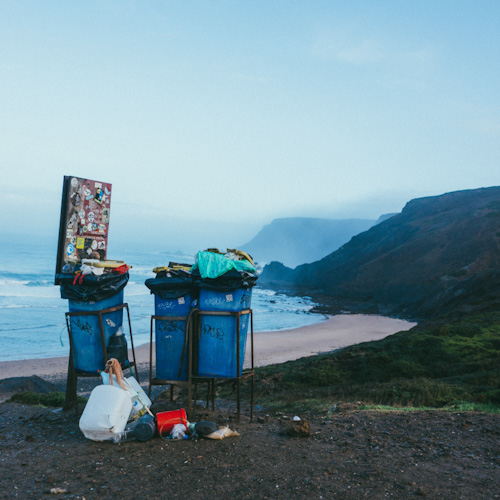
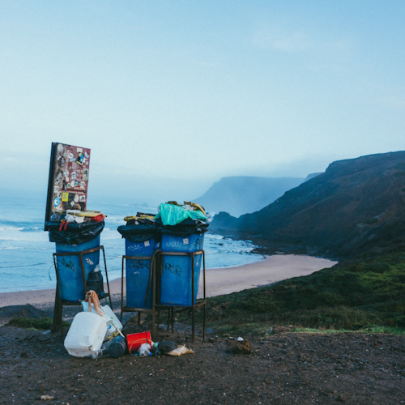
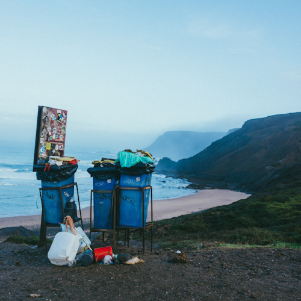

#mitgrønnevalg

 

Alle cubes drikkevarer er certificeret bionedbrydelig! Når du køber vores fantastiske veganske kaffe, får du garanti for en emballage der er 100% giftfri og fri for skadelige kemikalier. Du er dermed med til at hjælpe og passe på miljøet når du køber en iskaffe hos os.
Alle cubes drikkevarer er certificeret bionedbrydelig! Når du køber vores fantastiske veganske kaffe, får du garanti for en emballage der er 100% giftfri og fri for skadelige kemikalier. Du er dermed med til at hjælpe og passe på miljøet når du køber en iskaffe hos os.
